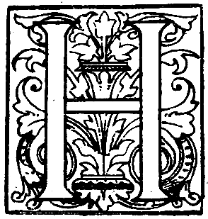

i, i'm Akshat!i love building things and dragging good ideas out into the open where people can use them.
some interesting things about me:
if any of this overlaps with what you're building, a startup, a podcast, a research project, a nonprofit, whatever it is, I'd like to hear about it! write to me at bhaskarakshat22@gmail.com
or reach the things I run directly:
Edunomix
Join or Enquire: edunomixinstitute@gmail.com
Learn More: edunomixinstitute.com
Decoded
Join: team@thedecodedpodcast.com
Guests & Ideas: outreach@thedecodedpodcast.com
Everything Else: akshat@thedecodedpodcast.com
Learn More: decodedpodcast.vercel.app
Project Fermat
Join or Enquire: theprojectfermat@gmail.com
Learn More: projectfermat.vercel.app